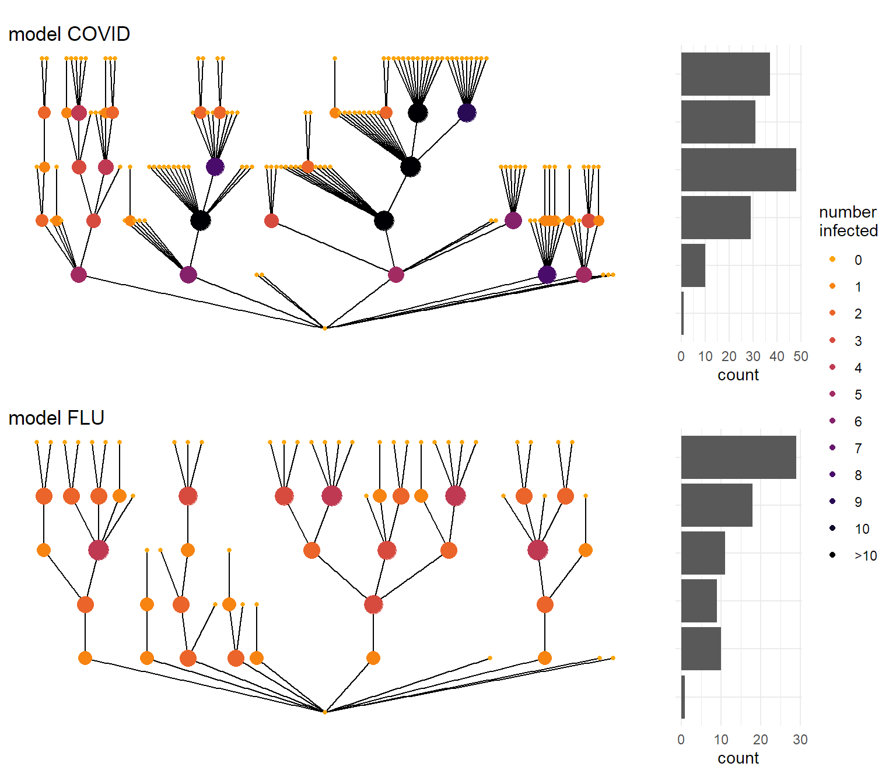
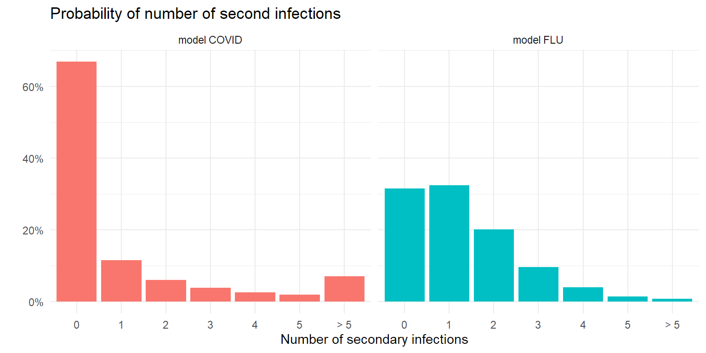
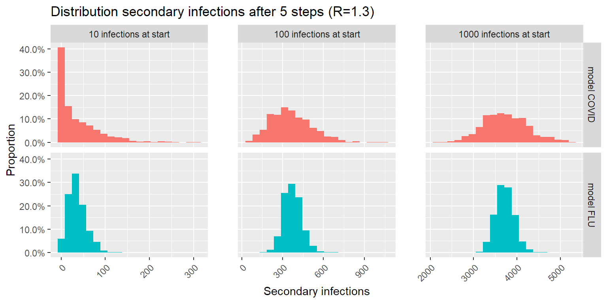
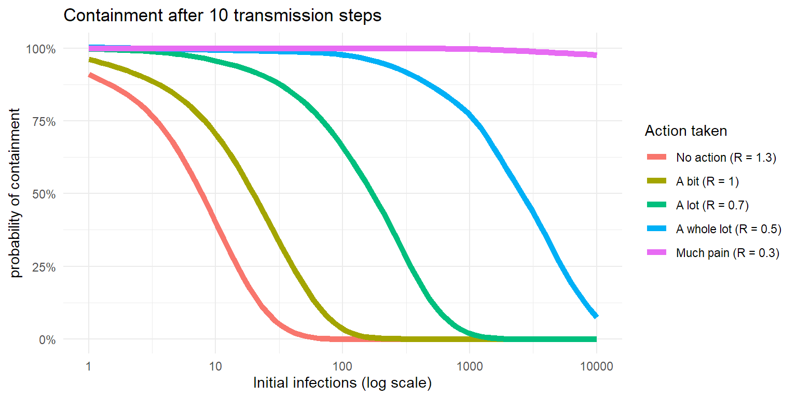

Recently, the atlantic published a very insightful article about an often ignored characteristic of the COVID pandemic. It turns out that the infectivity differs far more between people in this pandemic compared to for example the flu. There’s quite a lot of people that don’t transmit the virus at all, and a few that infect a lot of others. This phenomenon is called ‘’overdispersion’’.
In the figure below I illustrate a ‘’typical’’ transmission chain with 5 steps for a covid-style and a flu-style pandemic. Whereas the flu spreads in a more continuous way through a population, COVID infections happen more in bursts. And that has some important implications.
# This loads all the functions used for the simulations here.
source("https://raw.githubusercontent.com/JoFAM/covidBE_analysis/master/functions/simulate_overdispersion.R")
set.seed(913)
covid <- simul_chain(k=0.2, R = 1.3,nsteps=5)
flu <- simul_chain(k=5, R = 1.3, nsteps=5)
(plot_chain(covid,
title = "model COVID") /
plot_chain(flu,
title = "model FLU")) +
plot_layout(guides = "collect")
This simulation is done using what is called a ‘’negative binomial distribution’’. It’s a mathematical formula that describes how much chance there is to infect a certain number of other people, and it is defined by 2 parameters:
Endo et al (2020) have tried to put some reasonable numbers on k, and arrived at a number somewhere between 0.05 and 0.2 for an R value of 2. As we’ve taken measures already, in most of the simulations below I’ll be a bit more optimistic and work with an R value of 1.3. For COVID I use a k value of 0.2 based on Endo et al(2020), for flu I use one of 5. With those choices, the probability of the number of secondary infections for both epidemic models look like the figure below.
probs <- tibble(quant = 0:50,
Covid = dnbinom(quant,size = 0.2, mu = 1.3),
Flu = dnbinom(quant, size = 5, mu = 1.3)) %>%
pivot_longer(c(Covid, Flu),
names_to = "disease",
values_to = "prob") %>%
mutate(quant = cut(quant,
breaks = c(0:6,Inf),
labels = c(0:5,"> 5"),
right = FALSE),
disease = recode(disease,
Covid = "model COVID",
Flu = "model FLU")) %>%
group_by(quant, disease) %>%
summarise(prob = sum(prob))
ggplot(probs, aes(x = quant, y = prob, fill = disease)) +
geom_col(show.legend = FALSE) +
facet_wrap(vars(disease)) +
labs(x = "Number of secondary infections",
y = "",
title = "Probability of number of second infections") +
scale_y_continuous(labels = percent_format()) +
theme_minimal()
It will not come as a surprise that with a low number of starting cases, a COVID epidemic is easier to control than a flu-like epidemic. Pure by chance it’s more likely to die out, given the large amount of people that don’t infect anyone else. But once the number of cases goes up, the dices start to roll differently…
Let’s see what happens when we introduce a number of infections in a population. In the following simulation we look at the number of new infections after 5 steps in the infection chain. As secondary infection occurs on average 4-5 days after the patient is infected themselves, 5 steps is about 20-25 days later. In the plot below I simulated 1000 transmission chains and counted the number of infections in the last step of the transmission chain.
sim <- c(
dist_cases(k=0.2,R=1.3,nstart = 10),
dist_cases(k=0.2,R=1.3,nstart = 100),
dist_cases(k=0.2,R=1.3,nstart = 1000),
dist_cases(k=5,R=1.3,nstart = 10),
dist_cases(k=5,R=1.3,nstart = 100),
dist_cases(k=5,R=1.3,nstart = 1000)
)
tsim <- tibble(
sim = sim,
disease = rep(c("covid","flu"), each = 3000),
nstart = rep(rep(c(10,100,1000), each = 1000),2)
)
ggplot(tsim, aes(x=sim)) +
geom_histogram(bins = 20, aes(y= after_stat(count)/1000,
fill = disease),
show.legend = FALSE) +
facet_grid(rows = vars(disease), cols = vars(nstart),
scales = "free_x",
labeller = labeller(
nstart = function(i)paste(i,"infections at start"),
disease = function(i) paste("model",toupper(i)) )) +
theme(axis.text.x = element_text(angle = 45,
hjust = 1),
panel.spacing.x = unit(2,"lines")) +
scale_y_continuous(labels = label_percent()) +
labs(y="Proportion",
x="Secondary infections",
title = "Distribution secondary infections after 5 steps (R=1.3)")
The good news: lower number of infections is more likely with COVID than with a flu-like epidemic. The bad news: higher number of infections is more likely with COVID than with a flu-like epidemic. This makes sense: the larger spread on number of secondary infections per patient causes a larger spread on possible outcomes after 5 steps in the infection chain.
As Zeyne Tufekci wrote in his article in the Atlantic, the key to controlling this outbreak, is finding and containing those clusters. This can be done in multiple ways by the way. Preferably a solid contact-tracing effort traces every infection back to the cluster it started from, and isolates these clusters before they can grow into an uncontrollable problem. In combination with this, other measures to limit spread (pushing R lower) like distancing, mask use, ventilation and so forth will help break those transmission chains contact-tracing missed.
But the key here is to limit the number of infections in the community early on, as that gives you the best chance of eradicating the virus. In this next simulation, we look at the probability of the virus dying out within 10 transmission steps (40-50 days) depending on the number of initial infections.
psim <- simul_prob_containment(
nstart = c(1,3,10,30,50,100,200,300,500,700,1000,2000, 3000,5000,7000,10000),
nsimul = 100, fold = 10,
nstep = 10,
k = 0.2, R = 1.3
)
psimlim5 <- simul_prob_containment(
nstart = c(1,3,10,30,50,100,200,300,500,700,1000,2000, 3000,5000,7000,10000),
nsimul = 100, fold = 10,
nstep = 10,
k = 0.2, R = 1
)
psimlim3 <- simul_prob_containment(
nstart = c(1,3,10,30,50,100,200,300,500,700,1000,2000, 3000,5000,7000,10000),
nsimul = 100, fold = 10,
nstep = 10,
k = 0.2, R = 0.7
)
psimlim1 <- simul_prob_containment(
nstart = c(1,3,10,30,50,100,200,300,500,700,1000,2000, 3000,5000,7000,10000),
nsimul = 100, fold = 10,
nstep = 10,
k = 0.2, R = 0.5
)
psimlim0 <- simul_prob_containment(
nstart = c(1,3,10,30,50,100,200,300,500,700,1000,2000, 3000,5000,7000,10000),
nsimul = 100, fold = 10,
nstep = 10,
k = 0.2, R = 0.3
)
psim$lim <- "No action (R = 1.3)"
psimlim5$lim <- "A bit (R = 1)"
psimlim3$lim <- "A lot (R = 0.7)"
psimlim1$lim <- "A whole lot (R = 0.5)"
psimlim0$lim <- "Much pain (R = 0.3)"
pdata <- rbind(psim, psimlim3, psimlim5,psimlim1,psimlim0) %>%
mutate(lim = factor(lim,
levels = c("No action (R = 1.3)",
"A bit (R = 1)",
"A lot (R = 0.7)",
"A whole lot (R = 0.5)",
"Much pain (R = 0.3)")))
ggplot(pdata, aes(x=nstart,y=p, color = lim)) +
geom_smooth(method = "gam",
formula = y ~ s(x, bs = "ad",k=20),
se = FALSE,
lwd = 2) +
scale_x_log10() +
scale_y_continuous(labels = label_percent()) +
labs(x = "Initial infections (log scale)",
y = "probability of containment",
title = "Containment after 10 transmission steps",
color = "Action taken") +
theme_minimal()
So when someone complains about the economic impact of lockdowns, now you know that :
Ask New Zealand. Or Japan. South Korea, Taiwan, Singapore, …
disclaimer: You shouldn’t see the number of initial infections as the number of infections in a country, but in a connected community of significant larger size than the number of initial infections. And as no community is totally isolated, real life is a bit more complex.